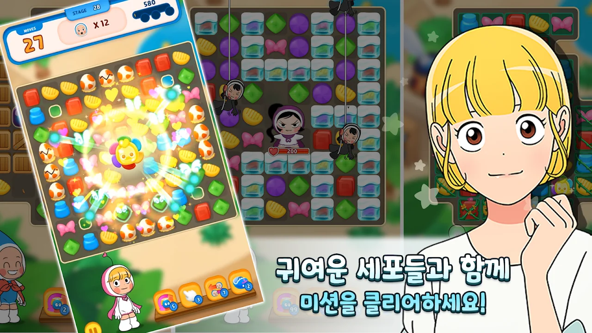
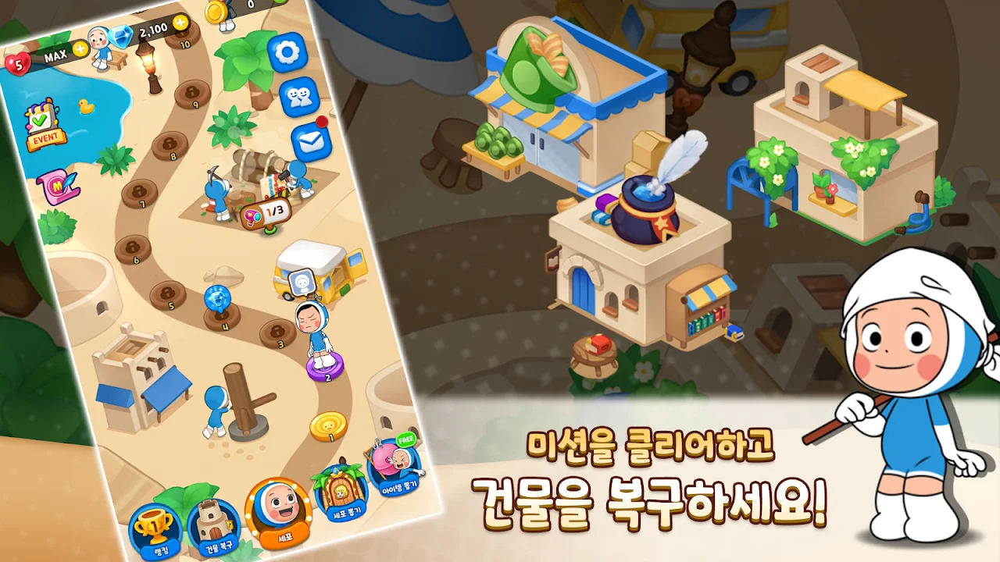
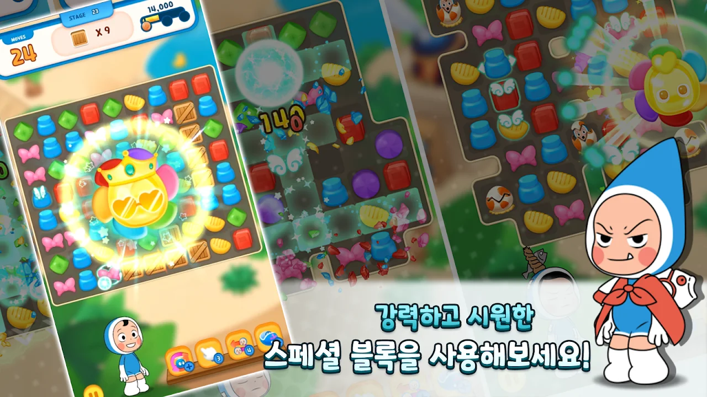
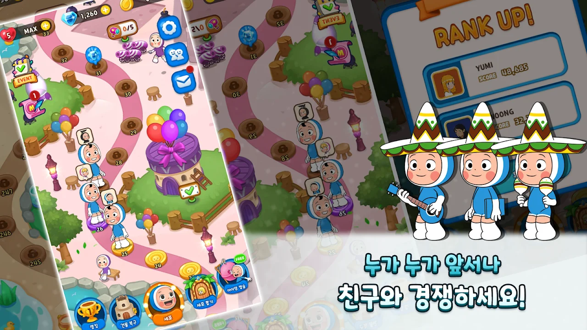

퍼즐을 풀고 세포들을 모아 육성하는 유미와 세포들 IP 기반 3-Match 퍼즐 게임입니다.
개요
Cut the Rope: Blast와 같은 팀에서 이어서 개발한 프로젝트로, 아웃게임과 컨텐츠 개발을 중심으로 참여했습니다. 기존 아웃게임 구조를 유미와 세포들 IP에 맞게 확장하면서, LINE 플랫폼 연동을 통한 소셜 기능을 새로 추가했습니다.




주요 기능
- 세포 매칭 퍼즐 스테이지 진행
- 게임 상점, 하트 보관함, 팀 시스템 등 아웃게임 콘텐츠
- LINE 플랫폼 연동 소셜 기능
맡은 역할 & 기여
- 게임 상점·하트 보관함·메인 로비·팀 시스템·리더보드 등 아웃게임 UI 및 개발
- 팀 토너먼트, 스타 토너먼트, 스타 체스트 등 컨텐츠 UI 및 개발
- LINE 플랫폼 연결을 통한 소셜 기능 개발
기술적 도전 & 해결
Cut the Rope: Blast에서 만든 아웃게임 구조를 재사용하면서도, LINE 플랫폼 특유의 로그인·친구 목록 연동 방식에 맞춰 소셜 기능을 새로 붙이는 작업을 진행했습니다.
회고
같은 구조를 다른 IP와 플랫폼에 맞게 확장해보면서, 재사용 가능한 아웃게임 설계의 중요성을 체감한 프로젝트였습니다.